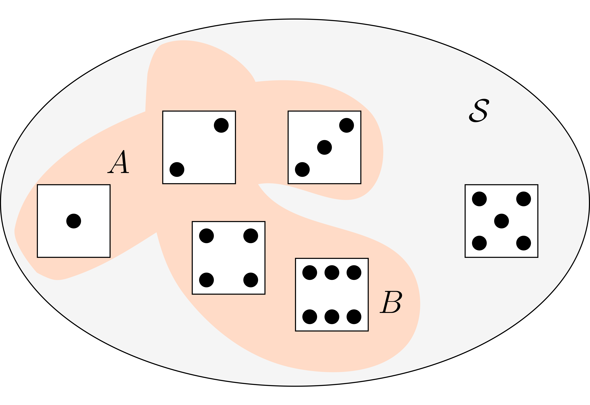
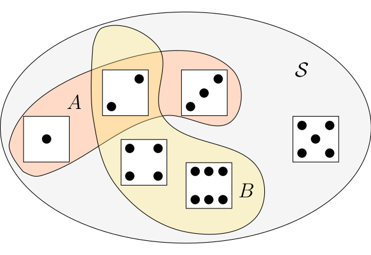
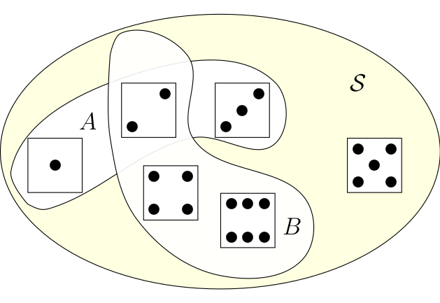
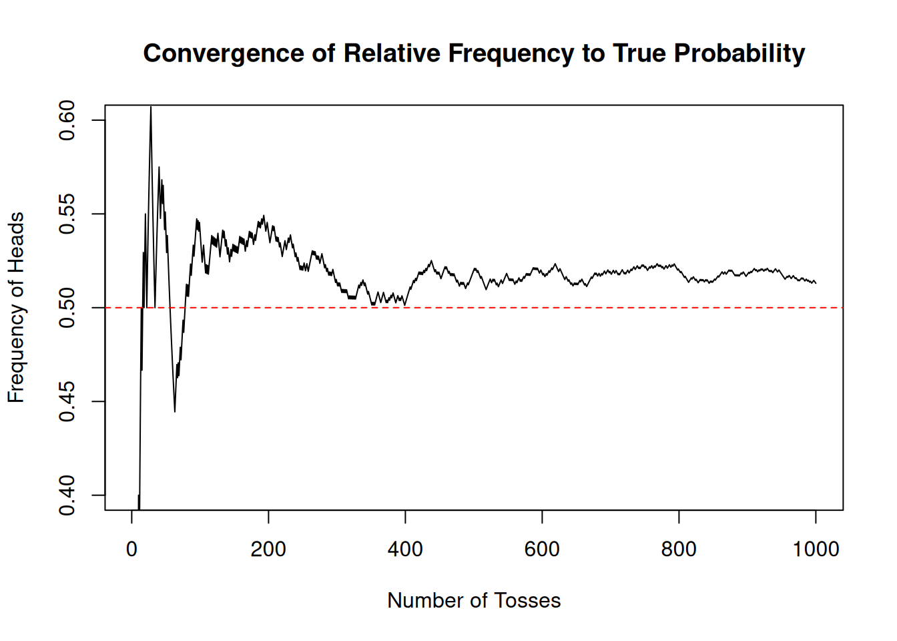

A <- c(1,2,3)
B <- c(2,4,6)2 Probability: Basic Definitions and Rules
This lecture explores the fundamentals of probability, including random experiments, sample spaces, and events, to better understand uncertainty. Building on previous concepts, we will delve deeper into empirical probability and explore its foundational role in probability theory. We will also examine the concept of independence, essential for understanding interactions between events. In contrast to lecture 1 we will strive for a more formal discussion of the concepts we learned so far and present probability as a mathematical theory.
As in the previous lecture R will help us to better understand these concepts in practice. We will substantially enlarge our knowledge of R in this lecture to buid more complex simulations as well as to enhance our ability to manipulate data for probabilistic analysis. As a finance context we will use stock market data as our leading example.
Let us briefly recap lecture 1: In lecture 1 we looked at an intuitive notion of probability as it was conceived at the origins of probability theory. The key idea there was that one approach to quantify or measure something like uncertainty you consider cases which are equally probable and then compute various probabilities by counting such cases. If the probability of cases do not influence the probability of other cases, if outcomes are independent, using this intuitive idea we can already analyse fairly sophisticated problems like some problems of coincidences.
We also learned some basic uses of R and how we can use R to built random experiments and simulate uncertain outcomes. We learned how we can use R to visualize experiments to enhance our understanding and how we can interact with an LLM to dive deeper into problems and concepts we are learning. For the visualizations we informally introduced the idea of repeating a random process many times and use the empirical relative frequency of events as measures of the probability of an outcome using a new idea of thinking about probabilities. In this way the informal discussion in lecture 1 gave us a panoramic overview both of basic probability ideas as well as of R which we are now going to enhance an deepen.
2.1 Terminology
Probability is a mathematical theory that provides a rigorous framework for understanding uncertainty. It is particularly useful when analyzing real-world phenomena, such as random sampling in surveys or fluctuations in stock prices.
Let us now formalize the foundational concepts of this theory:
- Random Experiment
- A process with a set of possible outcomes, where the specific outcome cannot be predicted with certainty beforehand.
To clarify this concept, we define uncertain outcomes in advance. We pin down the possible outcomes by agreeing on the outset what we want to consider as the possible outcomes. Take the simple example of considering whether the price of a stock is going to rise or fall at the next day. In a practical situations the outcome of a move in the stock price can be that it rises or falls but it could in principle also stay the same. Still when we think about the experiment of observing the stock price tomorrow in many applications in Finance we usually agree that rise and fall are the only possible outcomes of this experiment. When we want to consider the random experiment that includes the case that the price stays the same we need to agree upfront the the possible outcomes are rise, fall and unchanged.
This collection of all possible outcomes in probability theory is called the
- Sample space
- The collection of all possible outcomes of an experiment is called the sample space and is denoted as the set \({\cal S}\)
In the example before when we look at rises and falls in the stock price we would have \({\cal S} = \{rise, fall \}\)
- Basic outcome, event, simple event
- A basic outcome is a single possible result of a random experiment. An event is a subset of the sample space, representing one or more outcomes. A simple event is an event containing exactly one basic outcome.
Example: For {S} = {rise,fall}$, the event \(\{\text{rise}\}\) is a simple event, while the event \(\{\text{rise, fall}\}\) includes all outcomes and corresponds to the entire sample space.
In the first lecture we learned about two approaches to measure probability. But the theory of probability actually does not depend on how we measure it precisely. In the theory of probability this measure is an abstract concept.
- Probability
- For a given (discrete) sample space ${S}, Probability is a function that assigns a value to each event, representing its likelihood. The function has to fulfill three properties: 1. \(P({\cal S}) = 1\). 2. For any event \(A \in {\cal S}\), \(0 \leq P(A) \leq 1\). The probability of an event can never be negative or larger than 1. 3. For mutually exclusive events \(A\) and \(B\), \(P(A \cup B) \leq P(A) + P(B)\).
Thus when we talk about probability in a precise and meaningful sense we can only do so in relation to a given sample space or to a certain conceptual experiment. In theory, probability is an abstract measure of uncertainty that does not depend on how it is observed or estimated. While practical applications may involve approximating probabilities using data, the mathematical theory assumes probabilities are predefined and satisfy specific rules.
I have itroduced here probabilities with relation to a discrete sample space. The sample spaces discussed in Lecture 1 include finite sets, which can be small or large, such as the extensive output space of the SHA-256 hash function.
There are also more complicated discrete sample spaces: Think of the random experiment of tossing a coin as often as necessary to see Heads for the first time. We can begin writing down the basic outcomes as: \(E_1=H, E_2=TH, E_3 = TTH, E_4 = TTTH, ...\). An event where Heads never appear, denoted \(E0\), may also be considered. In this case, when the basic events can be arranged into a simple sequence. A sample space is called discrete if it contains only finitely many points, or infinitely many points which can be arranged into a simple sequence.
Not all sample spaces are discrete. Except for the technical tools required there is no essential difference between the two cases. In our discussion of probability in this lecture we consider mostly discrete sample spaces, however we will also discuss some basic non-discrete sample spaces later in the lectures. Now let us state more formally what we mean by probability.
Before we go on let me further clarify what we mean when we say that in the theory, probability is an abstract measure of uncertainty which we take as given.
2.2 Probability in theory and applications of probability
Probabilities are expressed as numbers between 0 and 1. As mentioned by Feller (1968) in his famous probability textbook, these numbers are of the same nature as distances in geometry. In the theory we assume they are given to us.
From the viewpoint of probability theory, we need not assume anything about how they are measured. In this sense probabilities in the theory of probability are an abstract measure of uncertainty.
In practical applications, determining probabilities or applying theory often requires sophisticated statistical methods. So, while the mathematical as well as the intuitive meaning of probability are clear only as we proceed with the theory we will get a better ability to see how we can apply this concept.
2.3 Probability and the language of sets
Probability theory relies on the language of sets to describe relationships between events. Understanding key set operations is essential for working with probabilities effectively.
Let’s go through them and illustrate the concepts in the context of the examples we have already developed in lecture 1.
- Union
- The union of two events \(A\) and \(B\) represents all outcomes that belong to \(A\), \(B\) or in both. It is written \(A \cup B\).
Let us use the example of the experiment of rolling a die. The sample space \({\cal S}\) is the set of all possible outcomes of rolling the dice \({\cal S}=\{1,2,3,4,5,6\}\). Assume one event is that the outcome is 1, 2 or 3. In set notation, we would write \(A = \{1,2,3\}\). Let us also assume that the second event is that the outcome is some even number, i.e. 2, 4, 6. Again using set notation we would write \(B = \{2,4,6\}\). The event \(A \cup B\) is then the set of all outcomes such that the outcome is in \(A\) or in \(B\) or in both or these sets.
You can implement set operations in R because R provides functions for computing set operations. Let us use the occasion to show you briefly how to use these functions in the context of this example: We define the sets \(A\) and \(B\) first using the assignment operator:
We compute the union by using the function union()
union(A,B)[1] 1 2 3 4 6which gives us the union of both sets.
To understand this operation better we can visualize the set union in this example by looking at Figure 2.1

The sample space \({\cal S}\) is the gray set containing all possible outcomes of our random experiment. Graphically the union of \(A\) and \(B\), \(A \cup B\) is a subset of the sample space, the entire colored area.
- Intersection
- The intersection of two events are all outcomes that are both in \(A\) and in \(B\). It is written as \(A \cap B\).
In R we would implement this operation by using the function intersect() and apply it to our sets \(A\) and \(B\) we have defined before.
intersect(A,B)[1] 2Figure 2.2 visualizes this operation graphically

The intersection of \(A\) and \(B\), \(A \cap B\) is the orange area containing the dice face with two points. Indeed two is both in \(A\) and in \(B\), which is exactly the meaning of set intersection.
- Complement
- The complement of an event \(A\) within the sample space \({\cal S}\) is the set of all outcomes that are in \({\cal S}\) but not in \(A\). It is written as \({\cal S} \setminus A\).
Lets say we want to get the complement, or the set difference of \(A \cup B\) with respect to the sample space \({\cal S}\).
The R implementation of the set differecne operation is the function setdiff(). This is how we would tell R to compute the setdifference of the union of \(a\) and \(B\) and the sample space \({\cal S}\) in our example of the die:
S <- c(1,2,3,4,5,6)
setdiff(S, union(A,B))[1] 5This can again be visualized in ?fig-set-minus

This complement is the dice shown in the light redish area, i.e. all the elements of \({\cal S}\) which are not in \(A \cup B\).
- Mutually Exclusive
- Two events \(A\) and \(B\) are mutually exclusive if they can not occur simultaneously. This means \(A \cap B = \emptyset\), their intersection is empty.
An example in our context is the set of even outcomes \(B=\{2,4,6\}\) and the set of odd outcomes, let us call it \(C=\{1,3,5\}\). If we intersect these sets
B <- c(2,4,6)
C <- c(1,3,5)
intersect(B,C)numeric(0)we get the empty set, which is expressed by R by giving the data type, in this case numeric, because we are intersecting sets of numeric values, followed by (0). This means, there is no numeric value in the intersection of \(B\) and \(C\).
Let us discuss set operations a bit further by thinking about the probability of the union of two events \(A\) and \(B\) within the context of our visual examples. Remember that we had \(A = \{1,2,3 \}\) and $B = { 2,4,6}. Look at Figure 2.3
We would like to know what is the probability of \(P(A \cup B)\)? Now if we add up \(P(A)\) and \(P(B)\) we would assign a probability to the outcome \(2\) twice. Such double counting must be avoided and thus we have to subtract \(P(A \cap B)\) the intersection, so that: \(P(A \cup B) = P(A) + P(B) - P(A \cap B)\). Now you see what the qualification mutually exclusive does in our probability rule 3. When \(A\) and \(B\) are mutually exclusive \(A \cap B = \emptyset\) and in this case \(P(A \union B) = P(A) + P(B)\). We can add up the probabilities because when events are mutually exclusive we can not double count events by adding up individual probabilities.
Now you try
If you drop the qualification that \(A\) and \(B\) must be mutually exclusive in point 3 in the definition of probability. How would rule 3 have to be changed?
Here’s a tip you could share with your students to encourage effective use of a Large Language Model (LLM) for deepening their understanding of the concepts and definitions introduced in this section:
2.4 Using an LLM to Deepen Your Understanding of Set Theory in Probability
An LLM like ChatGPT can be an incredibly helpful tool to explore concepts and solidify your understanding. Here are some example of what you could do:
2.4.1 Ask for Clarifications
If a definition or concept isn’t clear, ask the LLM to explain it in simpler terms or using different examples. For instance:
Prompt
“What is the difference between the union and intersection of sets in probability? Can you give examples?”
Follow up
“Can you compare this to a real-life scenario, like rolling a die or flipping a coin?”
2.4.2 Generate Additional Examples
Use the LLM to create new examples similar to the ones in the lecture. This will give you more practice applying the concepts.
Prompt
“Give me an example of mutually exclusive events involving sports outcomes.”
Prompt
“Can you show a sample space and events for tossing two coins?”
2.4.3 Simulate Visualizations and Code Interpretation
While the LLM doesn’t directly produce visuals, you can ask it to describe how a diagram or R output would look. This helps connect theoretical concepts to their graphical representations. For example:
Prompt
“Describe what a Venn diagram looks like for \(A \cup B\), \(A \cap B\), and \(A \setminus B\).”
Prompt
“What does the R function union(A, B) compute? How is it related to \(A \cup B\)?”
2.4.4 Practice Applying Definitions
Use the LLM to test your understanding by quizzing yourself.
Prompt
“Ask me questions about the definitions of sample spaces, union, intersection, and complement.”
Prompt
“Give me a scenario and ask which set operation applies.”
2.4.5 Explore Real-World Applications
Use the LLM to explore how these concepts apply in real-world contexts beyond the lecture.
Prompt
“How is the concept of set intersection used in data science or finance?”
Prompt
“Explain how mutually exclusive events are important in designing experiments.”
2.4.6 Learn R Through Step-by-Step Guidance
If you’re new to R, ask the LLM to guide you through using functions like union(), intersect(), and setdiff() step by step.
Prompt
“Explain how to use setdiff() in R with an example involving dice rolls.”
Follow up
“How does this output relate to the complement of a set?”
- Dive Deeper into Probability Rule 3:
Use the LLM to generate explanations and examples that clarify how probabilities relate to set operations.
Follow up
“Explain why \(P(A \cup B) = P(A) + P(B) - P(A \cap B)\).”
Follow up
“Can you provide a numerical example to illustrate this rule?”
2.4.7 Simulate Discussions
Ask the LLM to take the role of a peer or instructor to simulate a conversation about the material.
Prompt
“Pretend you are my study partner. Let’s discuss the complement of events and its significance in probability.”
By actively engaging with the LLM through these kinds of prompts, you can practice, explore, and deepen your understanding of the material beyond the lecture. Try it alone or with your group.
2.5 Probability and Frequency
Now it is time to explain a connection we made so far informally when we looked at visualizations and simulations, where we used connection between relative frequencies of probabilities in repetions of a random experiment.
The frequency interpretation of probability is a practical approach to understanding uncertainty. It defines the probability of an event \(A\) as:
\[\begin{equation*} P(A) = \frac{\text{Number of times $A$ occurs in repeated identical trials}}{\text{Total number of trials}} \end{equation*}\]
This interpretation is intuitive and often used in fields like engineering, finance, and natural sciences. However, it raises important questions about the connection between observed frequencies and theoretical probabilities.
The origins of this discussion reach back to the seventeenth century. The philosophers Gottfried Wilhelm Leibnitz (1646 - 1716) and Jacob Bernoulli (1655 - 1705) had great hopes for the new field of probability to find applications in fields like medicine, law, commerce and finance. This interest in exploring new fields of potential applications drove them to study frequency evidence of events. They felt that relying on intuitively equally probable cases might not be enough for these ambitious application attempts.
Jacob Bernoulli gave an answer which is among the great ideas in probability theory (see Diaconis and Skyrms (2019)), the weak law of large numbers. It establishes one of the most important connections between frequency and probability.
2.5.1 The Weak Law of Large Numbers (WLLN)
The Weak Law of Large Numbers provides a rigorous mathematical foundation for the frequency interpretation of probability. It states:
As the number of independent and identically distributed (i.i.d.) trials increases, the relative frequency of an event converges to its true probability with high probability.
Now let us pause here and restate what the weak law says: The law says that
- Over many trials, the observed frequencies of outcomes will get closer to their theoretical probabilities.
- This convergence occurs with high likelihood as the number of trials increases.
Observe also what the weak law does not say:
- Frequencies are not probabilities. Instead frequencies approximate probabilities as trials increase.
- The weak law does not guarantee exact convergence in finite samples - it describes long run outcomes of repeating identical experiments many times.
Let#s go back to the exmple of the fair coin we played with in lecture 1: There we constructed a fair coin toss where \(P(\text{Heads})=0.5\). When we have just a few tosses, say 10 times, you might observe 6 Heads (60%), which is close to but not exactly 50%. As you increase the tosses, say to 100, the frequency might be 52 Heads (52%), closer to 50%. if you go to even more tosses, say 10,000 tosses, the frequency approaches 50%.
This demonstrates that, as the number of trials increases, the relative frequency converges to the theoretical probability.
It is crucial to understand that Bernoulli’s Law of Large Numbers does not assert that frequencies are probabilities. Rather, it describes how, under certain conditions, frequencies fall within specific bounds relative to probabilities. Specifically, given a theoretical probability, a desired margin of error, and a confidence level, Bernoulli’s result provides an upper bound on the number of trials required for the relative frequency of an event to approximate its true probability.
This distinction highlights an important limitation: the Weak Law of Large Numbers addresses the problem of inference from probabilities to frequencies, not the reverse. That is, it shows how probabilities can predict the behavior of frequencies in repeated trials, but it does not justify using observed frequencies as definitive probabilities. Instead, the theorem ensures that as the number of trials grows, the relative frequency of an event will converge to its probability, within specified bounds.
Although we will frequently use frequency-based measures of probability in practical applications, it is essential to recognize the conceptual gap between the idealized mathematical theory and the empirical realities it seeks to describe. Probability theory relies on the concept of limiting relative frequencies, which exist only in an idealized framework of infinite trials. Real-world applications, however, involve finite data and inherently require interpretation, judgment, and domain expertise.
This distinction between theory and practice is more than a technical nuance—it addresses a fundamental challenge for any theory with practical ambitions: How does the idealized framework relate to the messy complexities of reality? In probability, as in other fields, there is no direct or naive application of theory to practice. Bridging this gap demands a sound understanding of the theory, along with careful consideration of real-world conditions and context.1
1 For a formal statement of the weak law of large numbers, we need more concepts which we have not yet introduced, in particular the notion of a random variable. Let me give the formal statement here for those of you who are interested and know the concept of a random variable already: Let \(X_1, X_2, \dots, X_n\) be \(n\) independently, identically distributed random variables with expected value \(\mu\) and variance \(\sigma^2\). Let \(\bar{X}_n\) denote the sample mean. Then the weak law of large numbers states: \(P(|\bar{X}_n - \mu | \geq \epsilon) \to 0 \quad \text{as } n \to \infty\). This means that the probability of the sample mean deviating significantly from the expected value diminishes as the number of trials increases.
2.5.2 Exploring the Weak Law of Large Numbers with R
In the following code chunk we first define a coin as we did in lecture 1 with the understanding that 1 represents Heads and 0 represents Tails. Then we use the replicate function and the sample function to toss the coin 1000 times.
Now in the next step we use the logical condition results == 1 to create a logical vector indicating whether each toss resulted in Heads. cumsum()then calculates the cumulative count of Heads after each toss. Dividing this cumulative count by (1:n) (the toss number) gives the cumulative relative frequency of Heads at each step.
Then we plot these frequencies againts the number of tosses. The \(x\)-axis represents the number of tosses, while the \(y\)-axis represents the relative frequency of heads. We draw a red horizontal line where the relative frequency is identical to the theoretical probability of \(0.5\).
# Define the coin
coin <- c(1, 0)
# Toss the coin n times
n <- 1000
results <- replicate(n, sample(coin, size = 1))
# Calculate cumulative frequency of Heads
heads_freq <- cumsum(results == 1) / (1:n)
# Plot the convergence
plot(1:n, heads_freq, type = "l", ylim = c(0.4, 0.6),
xlab = "Number of Tosses", ylab = "Frequency of Heads",
main = "Convergence of Relative Frequency to True Probability")
abline(h = 0.5, col = "red", lty = 2)
This plot illustrates how the relative frequency of Heads approaches \(P(\text{Heads})=0.5\) as the number of tosses increases.
2.6 Independence
The idealized thought experiment behind the Weak Law of Large Numbers assumes the idea of independence. Let us define this concept more precisely and explain its implications. While we have already used independence implicitly in earlier examples, it is important to formalize and understand it carefully.
2.6.1 Intuition Behind Independence
Two events are said to be independent if the occurrence of one event does not influence the probability of the other event occurring. In other words, knowing that one event has occurred provides no information about the likelihood of the other event.
For example, consider rolling a fair six-sided die twice. The outcome of the first roll does not affect the outcome of the second roll because the rolls are independent. The probability of any number appearing on the second roll remains \(1/6\), regardless of what happened on the first roll.
2.6.2 A Worked Example
Let us calculate the probability of rolling a 5 on the first roll and a 6 on the second roll.
This is the probability of the event “5 on the first roll and 6 on the second roll,” which we write as \(P(5 \cap 6)\).
Since the rolls are independent: \(P(5 \cap 6) = P(5) \times P(6)\).
- The probability of rolling a 5 on a fair six-sided die is \(P(5) = 1/6\).
- The probability of rolling a 6 on a fair six-sided die is \(P(6) = 1/6\).
Thus: \(P(5 \cap 6) = \frac{1}{6} \cdot \frac{1}{6} = \frac{1}{36}\).
This calculation uses the multiplication rule for independent events, which states that if two events \(A\) and \(B\) are independent, then the probability of both occurring is the product of their individual probabilities.
2.6.3 Definition of Independence
We now formalize this concept:
Independence:
Two events \(A\) and \(B\) are independent if and only if: \(P(A \cap B) = P(A) \times P(B)\).
This definition formalizes the idea that the occurrence of one event does not affect the likelihood of the other. Independence is an assumption we often make in theoretical models like the Weak Law of Large Numbers and many other probabilistic frameworks.
2.6.4 Important Note: Independence vs. Multiplication Rule
While independence allows us to use the multiplication rule \(P(A \cap B) = P(A) \times P(B)\), it is critical to remember that the reverse is not true:
- Just because you can multiply probabilities does not necessarily mean the events are independent.
- For independence to hold, the probabilities of the events must truly be unaffected by one another.
2.6.5 Why Is Independence Important Here?
Independence is a key assumption in the Weak Law of Large Numbers, where we consider a series of independent and identically distributed (i.i.d.) trials. Without independence, the law’s guarantees about the behavior of frequencies would not hold. As we move forward, we will see independence as a foundational concept in many probabilistic models and calculations.
2.7 Some more concepts from R: Reading Data, R Objects, Subsetting and Modifying Values
But now enough of dices and coins. Let us try out and apply some of the new ideas we just have learned and use the opportunity to learn some more important R concepts in the context of an example with stock price data.
2.7.1 Reading data in R
Before we can do anything with data, we need to learn how to load data into R and how to save them. We will discuss now how to do this with comma separated text files. R provides packages for reading and writing from almost any other format, like Excel, STATA, SAS or MATLAB. In all those cases the same principles apply as in the csv case.
I have prepared a data-file recording daily information on the stock price of Apple in csv, which I have downloaded from the internet. This file is called aapl_prices.csv. Let me at this stage skip the details of how I did that exactly. We will discuss getting financial data from the internet later.
To read a plain text or csv file, R provides the function read.csv(). If the csv file comes with a European instead of an US decimal format (, instead of . for the decimal sign.) you need read.csv2().
In the simplest form you read the data and write them to an object you can work with in R. For this you need to type something like this:
aapl_prices <- read.csv("data/aapl_prices.csv")The function needs as an argument the file name. If the file is in a sub-folder of the current directory you need to also specify the path. To specify the correct path to the file you need to know in which part of your directory tree you are currently working.
In my case I am working in the project folder for my lecture notes, which has a sub-folder called data and thus I specify the path relative to this location. To find out what is your current R working directory, R provides the function getwd(). If I type this in my case, I will get
getwd()[1] "/home/martinsummer/Code/R/Probability_Introduction"the path of my project folder for this lecture notes. So if I type the string "data/aapl_prices.csv" this specifies the path relative to my working directory.
If you read the file on your computer, you need to specify the path appropriately from where you are working in R at the moment to where you have stored the csv file.
Now read.csv() has many additional arguments, which provide you with lots of flexibility. I encourage you to check it out and play with it using the help function and the examples given therein.
We have now read the apple stock price data and written it to the R-object aapl_prices. Lets inspect the object a bit to see what we’ve got. I use the function head() with the parameter value n = 10. This will show me the first 10 rows of the datafile.
head(aapl_prices, n = 10) symbol date open high low close volume adjusted
1 AAPL 1990-01-02 0.314732 0.334821 0.312500 0.332589 183198400 0.266423
2 AAPL 1990-01-03 0.339286 0.339286 0.334821 0.334821 207995200 0.268211
3 AAPL 1990-01-04 0.341518 0.345982 0.332589 0.335938 221513600 0.269106
4 AAPL 1990-01-05 0.337054 0.341518 0.330357 0.337054 123312000 0.270000
5 AAPL 1990-01-08 0.334821 0.339286 0.330357 0.339286 101572800 0.271788
6 AAPL 1990-01-09 0.339286 0.339286 0.330357 0.335938 86139200 0.269106
7 AAPL 1990-01-10 0.335938 0.335938 0.319196 0.321429 199718400 0.257483
8 AAPL 1990-01-11 0.323661 0.323661 0.308036 0.308036 211052800 0.246755
9 AAPL 1990-01-12 0.305804 0.310268 0.301339 0.308036 171897600 0.246755
10 AAPL 1990-01-15 0.308036 0.319196 0.305804 0.305804 161739200 0.244967Without going into the details, we see that we get a data table, which records for every day beginning in January 1990 the opening, the highest and the lowest price, the closing price, the volume (number of shares) and the closing price adjusted for dividend and stock splits. Let’s not worry for the moment what the exact technical meaning of these financial terms is. Now we are ready to work with these data.
2.7.2 R objects
The most basic type of R objects are atomic vectors. Most structures in R are built from atomic vectors. The stock data-file we have just loaded is an example of such a more complex structure built from atomic vectors. We have already encountered a few of those in our previous lecture.
2.7.2.1 Atomic vectors
An atomic vector is just a simple vector of data. For example our die constructed in the first lecture is an instance of this.
die <- 1:6R has a function, which allows you to check whether an object is an atomic vector or not. This function is called is.vector(). It takes the object name as an argument and returns TRUE if the object is an atomic vector and FALSE if it is not. For example:
is.vector(die)[1] TRUEdoes indeed return TRUE.
Each atomic vector stores values in a one-dimensional vector, and each atomic vector can only store one type of data. The length of the atomic vector can be determined by the function length() This function takes an R object, which is an atomic vector, as an argument and returns the number of elements in this vector. Here is the example of the die
length(die)[1] 6which is 6 as it should be. An atomic vector could also have only one element, in which case lenght()would return 1.
Now altogether R has implemented six basic types of atomic vectors:
double
integers
characters
logical
complex
raw
We will not encounter complex and raw data-types in this course, so let us skip those and discuss only the first 4 types.
If yo u go back to our stock data and look at the first three lines
head(aapl_prices, n=3) symbol date open high low close volume adjusted
1 AAPL 1990-01-02 0.314732 0.334821 0.312500 0.332589 183198400 0.266423
2 AAPL 1990-01-03 0.339286 0.339286 0.334821 0.334821 207995200 0.268211
3 AAPL 1990-01-04 0.341518 0.345982 0.332589 0.335938 221513600 0.269106The variables open, high, close, volume and adjusted are all stored as the first R data type: Doubles. A double vector stores regular numbers. It seems natural to store such quantities as opening and closing prices as doubles. Doubles can be positive or negative, they can have digits right of the decimal place. If not explicitly told otherwise, R saves any number you give it as a double. Note that some functions refer to doubles with the more intuitive term numeric. It has an equivalent meaning in R.
For example the number of traded shares in our apple stock price file is saved as a double. But arguably the number of shares could also have been saved as an Integer. This is the second data type in R for number which can be written without decimals. If you explicitly specify number as integers, you need to append the letter L to the number. Say, for example, we would want to specifie the points shown on our die explicitly as integers, then we would type
die_int <- c(1L,2L,3L,4L,5L,6L)Now R will save the die with integer values. Before, since we did not explicitly specify it, the values were stored probably as doubles. You can check the type always with the function typeof():
typeof(die_int)[1] "integer"Now why should we care for distinguishing integers from doubles? This has to do with the way a computer does computations. Sometimes a difference in precision can have surprising effects. In your computer 64bits of memory are allocated for each double in an R program. While this allows for a very precise representation of numbers not all numbers can be exactly represented with 64-bits. The famous candidates are \(\pi\), which has an infinite sequence of digits and must therefore be rounded by the computer. Usually the rounding error introduced into your computations will go unnoticed but sometimes surprises can occur. Take for instance:
sqrt(2)^2 - 2[1] 4.440892e-16Why is that? The square root of 2 can not be expresses precisely because, as already the old Greeks knew, it is not a rational number. And voila, you have a small rounding error. Such errors are called floating point errors in computer science lingo and computing with such numbers is called floating-point-arithmetic.
With integers floating point errors are avoided, but for many applications this is not an option. Luckily for most cases floating-point arithmetic provides sufficient precision for most of the applications we encounter in practice.
When you look at the first column of our stock price data you see the ticker symbol of the apple stock AAPL. This is the symbol of the third data type: Character. A character vector stores strings of text, which have to be put between quotation marks "". Strings are the individual elements of a character vector. We have encountered character vectors already in this lecture, where we represented the fair coin with the vector c("H", "T") with the string "H" for head and the string "T" for tail.
Note that a string can be more than just letters. If you type, for instance the number 1 with quotation marks, like "1" R would interpret the value as a string not as a number. Sometimes one can get confused in R because both objects and characters appear as text in R code. Object names are without quotation marks strings always are between quotation marks.
The next data type in the list are: Logicals. Logical vectors store TRUEs and FALSES. They are extremely useful for doing comparisons and - as we will see shortly - also for subsetting.
For example, if you type:
0 > 1[1] FALSER tells you that this statement is False.
Whenever you type TRUE of FALSE without quotation marks, R will treat the input as logical data. For instance, the following statement yields:
logic <- c(TRUE, FALSE, TRUE)
logic[1] TRUE FALSE TRUEYou can check the type:
typeof(logic)[1] "logical"One important R-fact which you need to know about atomic vectors is that atomic vectors can have attributes. Attributes won’t affect the values of an object but can hold and store object metadata. Normally we do not look at these metadata, but many R functions check for attributes and then do special things with the object depending on these attributes.
Attributes can be checked with the function attributes() using an R object as an argument.
attributes(die)NULLSince diehas no attributes R returns NULL. This value is often returned by functions whose values are undefined.
The most common attributes for atomic vectors are names, dimensions and classes. Each of these attributes has its own helper function that you can use to give attributes to the object.
When you look up the value for the die you will get
names(die)NULLWe see that our die object has no names, but we could assign some. For example:
names(die) <- c("one", "two", "three", "four", "five", "six")Now the die has a name attribute:
attributes(die)$names
[1] "one" "two" "three" "four" "five" "six" Note that the values are not affected nor will the names be affected when the values are manipulated. For instance, if you type
die + 1 one two three four five six
2 3 4 5 6 7 the names stay what they were and all values are increased by 1. To remove the names you can type:
names(die) <- NULLOne very important attribute, we will encounter all the time is dimension, with the helper function dim(). For example we can look at our data object of stock prices to get:
dim(aapl_prices)[1] 8044 8which returns two numbers, which mean that the object has 8044 rows and 8 columns.
But with dim we can also transform our die into a matrix, with say two rows and three columns:
dim(die) <- c(2,3)
die [,1] [,2] [,3]
[1,] 1 3 5
[2,] 2 4 6R will always use the first value in dim for the rows and the second for the columns. dim can be generalized to higher dimensional array structures.
If you want to have more control on how R fills up the values, you can use a richer helper function, which gives you more control. For two dimensional data arrays this is provide by the function matrix(). Say you type
m <- matrix(die, nrow = 2)
m [,1] [,2] [,3]
[1,] 1 3 5
[2,] 2 4 6the matrix will be filled up by column. You can change that behavior by setting the byrow argument to TRUE.
m <- matrix(die, nrow = 2, byrow = TRUE)
m [,1] [,2] [,3]
[1,] 1 2 3
[2,] 4 5 6Notice that changing the dimensions of an object, will not change its type. But it will change the object’s class attribute:
dim(die) <- c(2,3)
typeof(die)[1] "integer"class(die)[1] "matrix" "array" A class in R is a special case of an atomic vector.
With the attribute system R allows you to represent more data types. R uses, for example a special class to represent dates and times. The data variable in our stock data is - for example - represents as a type of this kind.
To illustrate this we take the R-function Sys.time(). This function returns the current time on your computer. It looks like a character string when you display it but it is actually a double with class POSIXct, POSIXt (it has two classes):
now <- Sys.time()
now[1] "2024-12-28 23:16:57 CET"typeof(now)[1] "double"class(now)[1] "POSIXct" "POSIXt" POSIXct is a widely used framework for representing dates and times. But we will skip the details here.
R stores categorical data, such as nationality, sex etc. by using factors. If you take for instance, sex, it can have only two values - male or female - and these values may have their idiosyncratic order, for example that females go always first. To make a factor in R you have to pass an atomic vector to the factor() function. This function works by recoding the values in the vector as integers and store the results in an integer vector. R also adds a level attribute which contains the set of labels and their order and a class attribute that says the vector is a factor. Example:
sex <- factor(c("m", "f", "f", "m"))
typeof(sex)[1] "integer"attributes(sex)$levels
[1] "f" "m"
$class
[1] "factor"Factors can be confusing since they look like characters but behave like integers.
Note that R will often try to convert character strings to factors when you load and create data. I recommend that you do not allow R to make factors unless you explicitly ask for it. This can usually be controlled by an argument to whatever the data reader function is. For instance you can give the read.csv() function the argument stringsAsFactors = FALSE.
R has an internal coercion behavior for data types, which you should know about if you work with R. With this knowledge you can do many useful things.
If a character string is present in an atomic vector, R will automatically convert every other component in this vector to a character string. If a vector contains only logicals and numbers, R will convert the logicals to numbers. In this case every TRUE becomes a 1 and every FALSE becomes a 0.
R also uses the coercion rules, when we do math with logicals, like for example
sum(c(TRUE, TRUE, FALSE, FALSE))[1] 2What happens here is that R coerces the vector c(TRUE, TRUE, FALSE, FALSE) to the vector c(1, 1, 0, 0) and sums the components.
Going back to our data set on the apple stock price, we see that this dataset stores values of different types, characters, dates and doubles. How does R achieve this?
The answer is that this is achieved by a data structure called a list. List are like atomic vectors, because the group data into a one-dimensional set. However, lists do no group together individual values. List group together R objects, such as atomic vectors or even other lists.
For example, you can create a list, which contains a numeric vector of length 31 in its first element, a character vector of length 1 in its second element and a new list of length 2 in its third. This is done by using the list()function of R, like this:
list_example <- list(100:130, "R", list(TRUE, FALSE))
list_example[[1]]
[1] 100 101 102 103 104 105 106 107 108 109 110 111 112 113 114 115 116 117 118
[20] 119 120 121 122 123 124 125 126 127 128 129 130
[[2]]
[1] "R"
[[3]]
[[3]][[1]]
[1] TRUE
[[3]][[2]]
[1] FALSEThe double bracketed indices tell you which element of the list is being displayed. The single bracketed indices tell you which sub-element of the list is being displayed. For example 100 is the first subelement of the first element in the list. “R” is the first subelement of the second list element.
Data Frames are the two dimensional version of a list. They are by far the most useful storage structure for data analysis. Indeed, our dataset on the Apple stock price we have loaded before is an instance of a data frame. Data frames group vectors together in a two dimensional table. As a consequence each variable can, i.e. each column of the data frame can contain a different data type. Within a column, however, we can have only one data type.
if you look at the type of a data frame, you will see that it is indeed a list and the class is a data frame.
typeof(aapl_prices)[1] "list"class(aapl_prices)[1] "data.frame"Now armed with our new knowledge of R and probability lets ask a question to our new data set.
2.7.3 Example: Will the stock price of Apple move up or down?
Let us look at the first lines of our data once again:
head(aapl_prices, n = 10) symbol date open high low close volume adjusted
1 AAPL 1990-01-02 0.314732 0.334821 0.312500 0.332589 183198400 0.266423
2 AAPL 1990-01-03 0.339286 0.339286 0.334821 0.334821 207995200 0.268211
3 AAPL 1990-01-04 0.341518 0.345982 0.332589 0.335938 221513600 0.269106
4 AAPL 1990-01-05 0.337054 0.341518 0.330357 0.337054 123312000 0.270000
5 AAPL 1990-01-08 0.334821 0.339286 0.330357 0.339286 101572800 0.271788
6 AAPL 1990-01-09 0.339286 0.339286 0.330357 0.335938 86139200 0.269106
7 AAPL 1990-01-10 0.335938 0.335938 0.319196 0.321429 199718400 0.257483
8 AAPL 1990-01-11 0.323661 0.323661 0.308036 0.308036 211052800 0.246755
9 AAPL 1990-01-12 0.305804 0.310268 0.301339 0.308036 171897600 0.246755
10 AAPL 1990-01-15 0.308036 0.319196 0.305804 0.305804 161739200 0.244967Let us check what kind of object aapl_prices is.
typeof(aapl_prices)[1] "list"class(aapl_prices)[1] "data.frame"As expected the object is a list. The class shows that our object is a data.frame. Since the object is of class data-frame we can use the dim function to see the number of daily observations in our data set.
dim(aapl_prices)[1] 8044 8We see that our data store price information about 8044 trading days.
We could now approach the question about the probability of the Apple stock price moving up tomorrow by taking a frequency-approach. This would require us first to count the number of up-movements in our data. How do we do that?
Now we need to know know how we address and work with individual values in our data-set. Let’s say we measure the movement of the close price. R has a notation system to extract a value or subset of values from an object: You write the name of the object first, followed by a pair of hard brackets. Between the brackets goes a ,separating row and column indices. The notation is thus like aapl_prices[ , ].
When it comes to writing the indices you have six different ways to do this, all of them very simple. You can use:
- Positive integers
- Negative integers
- Zero
- Blank spaces
- Logical values
- Names
The simplest are positive integers. For example if you choose
aapl_prices[1,6][1] 0.332589you see that the first value in the sixth column is selected. You thus get the first closing price of the Apple stock recorded in our dataset. You can extract more than one value, for instance by typing:
aapl_prices[1:10, 6] [1] 0.332589 0.334821 0.335938 0.337054 0.339286 0.335938 0.321429 0.308036
[9] 0.308036 0.305804which gives you the first 10 closing prices.
Note that R’s notation system is not limited to data frames. The same syntax can be used to select values from any R object, provided you supply an index for each dimension of the object. Two things have to be kept in mind. In R indexing begins at 1. In some other programming languages indexing begins at 0. The indexing convention in R is just like in linear algebra. The second thing to note is that if you select two or more columns from a data frame, R will return a new data frame, like in
aapl_prices[1:10,1:8] symbol date open high low close volume adjusted
1 AAPL 1990-01-02 0.314732 0.334821 0.312500 0.332589 183198400 0.266423
2 AAPL 1990-01-03 0.339286 0.339286 0.334821 0.334821 207995200 0.268211
3 AAPL 1990-01-04 0.341518 0.345982 0.332589 0.335938 221513600 0.269106
4 AAPL 1990-01-05 0.337054 0.341518 0.330357 0.337054 123312000 0.270000
5 AAPL 1990-01-08 0.334821 0.339286 0.330357 0.339286 101572800 0.271788
6 AAPL 1990-01-09 0.339286 0.339286 0.330357 0.335938 86139200 0.269106
7 AAPL 1990-01-10 0.335938 0.335938 0.319196 0.321429 199718400 0.257483
8 AAPL 1990-01-11 0.323661 0.323661 0.308036 0.308036 211052800 0.246755
9 AAPL 1990-01-12 0.305804 0.310268 0.301339 0.308036 171897600 0.246755
10 AAPL 1990-01-15 0.308036 0.319196 0.305804 0.305804 161739200 0.244967However, if you select a single column, R will return a vector:
aapl_prices[1:10, 6] [1] 0.332589 0.334821 0.335938 0.337054 0.339286 0.335938 0.321429 0.308036
[9] 0.308036 0.305804If you prefer to get returned a data frame in this case, you have to add the argument drop = FALSE, like:
aapl_prices[1:10, 6, drop = FALSE] close
1 0.332589
2 0.334821
3 0.335938
4 0.337054
5 0.339286
6 0.335938
7 0.321429
8 0.308036
9 0.308036
10 0.305804Negative integers work exactly opposite to positive integers. If you type:
head(aapl_prices[-1,6], n = 10) [1] 0.334821 0.335938 0.337054 0.339286 0.335938 0.321429 0.308036 0.308036
[9] 0.305804 0.311384R will return the sixth column of the data frame except the first row. We just display the first 10 values.
If you try to pair a negative and a positive integer in an index, R will return an error. However, you can use both negative and positive integers if you use them in different indices.
Zero is neither positive nor negative, If you use 0 as an index, R will return nothing from a dimension with index 0. The following syntax for instance creates an empty object
aapl_prices[0,0]data frame with 0 columns and 0 rowsBlank spaces are used if you want to ask R to select every value in a dimension. So for instance, if you type:
sel <- aapl_prices[ , 6]R will select the entire column of closing prices. You can check that the length of this vector is
length(sel)[1] 8044as expected.
Logical Values can also be used for subsetting. If you type for instance
aapl_prices[1, c(F,F,F,F,F,T,F,F)][1] 0.332589R will select the first closing price. Note that here we used the R convention that TRUEand T as well as FALSEand F have an equivalent meaning.
Finally, you can ask for the elements, you want by name. On our case, you could select the first closing price by
aapl_prices[1, "close"][1] 0.332589Finally, note that two types of object in R obey an optional second system of notation. You can extract values from data frames and lists with th $syntax. It works as follows: For example
mean(aapl_prices$close)[1] 16.39576would select the column of closing prices and compute their mean.
Now lets try to solve the counting problem for our data set. To see whether the price went up we need to subtract the closing price of the first data from the second, and see whether it is larger than zero. This we would have to do for every observation in the whole frame.
Now let us bring our indexing rules into action. We create two new objects, one ranging from observation 2 of the close price until the end of the data frame, the other ranging from 1 to but the last element, then we subtract and write the result in a new object. Finally we inspect the first 10 elements of the result
aux_1 <- aapl_prices[2:8044, "close"]
aux_2 <- aapl_prices[1:8043 , "close"]
diff_close <- (aux_1 - aux_2)
diff_close[1:10] [1] 0.002232 0.001117 0.001116 0.002232 -0.003348 -0.014509 -0.013393
[8] 0.000000 -0.002232 0.005580Now this works but it is not very elegant. Actually R has a built in function, called diff() which will do the job for us. We can even append the result to the frame we have using the $ notation as follows: Let us call the new variable diff. But now we have to be careful. Since we take first differences we will looe one observation. This will create a mismatch in the dimenion of the dataframe. Since the data frame starts at some date (in our case 1990-01-02) we have no difference for the first observation. R’s notation for a missing observation is NA. So we neet to put an NAahead of our diff column:
aapl_prices$diff <- c(NA, diff(aapl_prices$close, lag = 1))
head(aapl_prices, n= 5) symbol date open high low close volume adjusted
1 AAPL 1990-01-02 0.314732 0.334821 0.312500 0.332589 183198400 0.266423
2 AAPL 1990-01-03 0.339286 0.339286 0.334821 0.334821 207995200 0.268211
3 AAPL 1990-01-04 0.341518 0.345982 0.332589 0.335938 221513600 0.269106
4 AAPL 1990-01-05 0.337054 0.341518 0.330357 0.337054 123312000 0.270000
5 AAPL 1990-01-08 0.334821 0.339286 0.330357 0.339286 101572800 0.271788
diff
1 NA
2 0.002232
3 0.001117
4 0.001116
5 0.002232Let’s check whether we get the same thing and compare with the values in diff_close. They do indeed match.
Now we can use a really cool feature to count the up moves, which shows you the power of R in a very nice example. We can test conditions by logical operators. In our case we want to know whether the diff between two consecutive closing prices is positive. We add another column to the dataframe which will then contain TRUE or FALSEvalues, when the condition holds. To see what happens, let us do this and look at the first 5 rows of our new data frame:
aapl_prices$diff_pos <- aapl_prices$diff > 0
head(aapl_prices, n = 10) symbol date open high low close volume adjusted
1 AAPL 1990-01-02 0.314732 0.334821 0.312500 0.332589 183198400 0.266423
2 AAPL 1990-01-03 0.339286 0.339286 0.334821 0.334821 207995200 0.268211
3 AAPL 1990-01-04 0.341518 0.345982 0.332589 0.335938 221513600 0.269106
4 AAPL 1990-01-05 0.337054 0.341518 0.330357 0.337054 123312000 0.270000
5 AAPL 1990-01-08 0.334821 0.339286 0.330357 0.339286 101572800 0.271788
6 AAPL 1990-01-09 0.339286 0.339286 0.330357 0.335938 86139200 0.269106
7 AAPL 1990-01-10 0.335938 0.335938 0.319196 0.321429 199718400 0.257483
8 AAPL 1990-01-11 0.323661 0.323661 0.308036 0.308036 211052800 0.246755
9 AAPL 1990-01-12 0.305804 0.310268 0.301339 0.308036 171897600 0.246755
10 AAPL 1990-01-15 0.308036 0.319196 0.305804 0.305804 161739200 0.244967
diff diff_pos
1 NA NA
2 0.002232 TRUE
3 0.001117 TRUE
4 0.001116 TRUE
5 0.002232 TRUE
6 -0.003348 FALSE
7 -0.014509 FALSE
8 -0.013393 FALSE
9 0.000000 FALSE
10 -0.002232 FALSENow according to the frequency notion of probability we could attach the probability of an inter day up move of the Apple stock price by computing the share of up moves (diff positive) among all our change observations.
Now we can use the R coercion rules. If we apply the mean function to our diff_pos column we get the share of up moves, since R will coerce the TRUE values to 1 and the FALSE values to 0. This is a new opportunity to practice our newly acquired subsetting rules:
mean(aapl_prices$diff_pos, na.rm = T)[1] 0.5051598We see that the result is that the stock price has moved up about half of the days and not up at the other days.
Let me explain what is going on in the syntax of our R statement. We selected the column from our data frame that contained the differences. Then we apply the mean() function to this column. But since the column contains one value which is NA the mean would return NA if we not correct for this fact. This is what the argument na.rm = T does. It tells R to first remove NA form the observations and then compute the mean.
Now from a frequency point of view \(P(U) = 0.51\) and \(P(D) = 0.49\) accordingly.
Now assume in addition that the direction of a price move of the Apple stock on the current trading day is independent of the direction of the Apple stock price move on the previous trading day for all days. This means that the probability of \(U\)-movements and of \(D\)-movements is unaffected by the number of previous \(U\) and \(D\) movements. This is - of course - an assumption. You may think about whether this assumption is reasonable.
Postponing this important discussion, consider now a week from Monday to Friday and ask: “What is the probability that the price of Apple will increase on each of the consecutive days?”
There are five trading days, so we need to compute \(P(U \cap U \cap U \cap U \cap U \cap U)\). This is by our assumption of independence equal to \(P(U) \cdot P(U) \cdot P(U) \cdot P(U) \cdot P(U)\). By our probability estimate from relative frequency this amounts to \(0.51^5\), which amounts to \(0.035\).
“What is the probability that the stock price will decrease either on Monday, Tuesday, Wednesday, Thursday or Friday and will increase on the other four days?”
The probability that the \(D\) movement happens, say on a Monday, is \(P(D \cap U \cap U \cap U \cap U)\) or \(0.49*0.51^4\) which is \(0.033\). We have in total five mutually exclusive scenarios: \(P(D \cap U \cap U \cap U \cap U)\), \(P(U \cap D \cap U \cap U \cap U)\), \(P(U \cap U \cap D \cap U \cap U)\), \(P(U \cap U \cap U \cap D \cap U)\), \(P(U \cap U \cap U \cap U \cap D)\). Thus we have \(0.033 + 0.033 + 0.033 + 0.033 + 0.033\) as the final probability of this event, which is \(0.132\).
Is this analysis any good? How could we possibly judge this? Interestingly the relative frequencies of up and down moves look similar to a random experiment of a few thousand tosses of a fair coin. But can we learn anything from this? Are the up and down moves independent? Independence - of course - does not follow from the result we just got.
The idea that stock prices may fluctuate randomly was first discussed systematically by Louis Bachelier (1870 - 1946), a French mathematician who studied stock price movements mathematically. In 1965 the economist Samuelson (1965) published an article with the title “Proof that stock prices fluctuate randomly”. He argues in this paper that randomness comes about through the active participation of traders seeking to maximize their wealth. A huge army of investors would aggressively use the smallest informational advantage and in doing so, they incorporate the information into market prices, which quickly eliminates this profit opportunity. This lead to a cornerstone of modern Finance theory called the random walk hypothesis of stock price fluctuations.
If this theory was true, it would give an argument, why we might look at the up and down movements in the stock price of apple as if it was the outcome of tossing a fair coin. In this case the probability of an up or a down movement should be 1/2 and with the number of trials approaching infinity the frequency of ups and downs should approach this probability.
The literature on stock price fluctuations which came later, however, presented evidence that stock prices are predictable to a certain degree and do not fluctuate randomly. A good reference summarizing this evidence is Lo and MacKinlay (2019) In this case our approach would perhaps produce a misleading answer.
We cannot give a clear cut answer here. The point of this brief discussion is that you just cannot apply a theoretical machinery mechanically without giving it further thought and without maintaining a healthy amount of skepticism. It is fascinating that there are situations where abstract theories, like the theory of probability, show a robust relation to real world phenomena. But the nature, the precise meaning and the robustness of this relation has to be investigated for each single case.
2.7.4 Example: Benfords law: The empirical probabilities of leading digits
Let us discuss last example in this lecture which will fortify both our probability knowledge as well as our newly gained R skills. It will also prepare you for the project assigned in this lecture, which will familiarize you with yet another financial dataset.
The example we are going to discuss here is again an instance of empirical probabilities for a rather surprising instance: Leading digits. What are leading digits? Well the concept is actually simple: Say we have the number 7829, then the leading digit in this number is 7, the first digit in 7829. If the number is 10892, it would be 1, if it is 4 it would be 4.
Now we could ask the following question: let’s look at datasets we can find in real life, any datasets. How often in these datasets is the leading digit a 1, a 2, etc. or a 9? You might think that they all occur with about the same frequency. Indeed, what would be special about any particular digit? So in this case each number would occur with probability \(1/9\) or with a frequency of about \(11 \%\).
But here is an interesting fact: They occur with unequal frequency. They are actually quite unequal and follow a peculiar logarithmic pattern; you can give a formula for the empirical probabilities. This formula looks as follows:
- Benfords Law
- In a dataset the frequency of \(d\) being the first digit is \[\begin{equation*} P(d) = \log_{10}\left(1+ \frac{1}{d}\right) \end{equation*}\] where \(d \in \{1,\cdots, 9 \}\)
Let us look at how this distribution looks like. Let us build a data frame where we see the digits in one column and the Benford-Probabilities in the second one:
benford <- data.frame(Digit = 1:9)
benford$Prob_Benford <- log10(1 + 1/benford$Digit)
knitr::kable(benford)| Digit | Prob_Benford |
|---|---|
| 1 | 0.3010300 |
| 2 | 0.1760913 |
| 3 | 0.1249387 |
| 4 | 0.0969100 |
| 5 | 0.0791812 |
| 6 | 0.0669468 |
| 7 | 0.0579919 |
| 8 | 0.0511525 |
| 9 | 0.0457575 |
Now here comes the really surprising fact. This law has been observed in credit card bills, stock market prices, in the market valuation of listed companies, in population data, the length of rivers.
There are some requirements on these datasets: They should not have an arbitrary maximum or minimum for example. The numbers also must not be assigned, like grades of exams, assigned phone numbers or assigned identities.
Now let us check this with a real data set. We choose a dataset of US-county population data. This give us an opportunity to show you a second way to read a csv file into R by giving the internet link to the file directly as a string to the read.csv() function. We do this with the population data and store the data in an object we call population_data.
population_data <- read.csv("https://www2.census.gov/programs-surveys/popest/datasets/2010-2020/counties/totals/co-est2020-alldata.csv")So you, if you know the internet address of the file and the file name you can read data also directly from an url without first downloading them and then read it from your local copy.
Now we want to use these data to check or illustrate Benford’s law. Now you will encounter something typical for real data situations. If you inspect the data, you will see that there is much more than we need. Let us therefore select the data we want to look at, using the R tools we learned in this lecture. We create a new data frame which contains only the variables COUNTY STNAME, CTYNAME and CENSUS2010POP, and we discard all the other ones.
pop_us <- data.frame(County_ID = population_data$COUNTY, State = population_data$STNAME, County = population_data$CTYNAME, Population = population_data$CENSUS2010POP)This looks already pretty good, but we would like to have the data purely on county level. The current data set also contains State aggregates, which have County_Id == 0. There are also a few counties which get value “X”. We also want to filter out those. Let’s use logical sub-setting to filter these data:
pop_us_filtered <- pop_us[((pop_us$County_ID != 0) & (pop_us$Population != "X")), ]This will give us the pop_us data frame with all rows except those where the variable County_ID is equal to zero (which are the state aggregates).
Now we extract the leading digits from the population numbers. Notice that in our data set the population numbers are stored as characters, as you can see from typing:
typeof(pop_us_filtered$Population)[1] "character"So we can use R’s string functions. This is a vast area which could fill a lecture on it own. We just mention one of the many R-functions operating on strings. One way to implement selection of a leading digit is using one of R’s string functions, substr(). You can give any string to this function and cut a substring, by specifying where it should begin and where it should end. Now in our case the population number. Let us use this to add a new column of leading digits to the data frame.
pop_us_filtered$LD <- substr(pop_us_filtered$Population, 1, 1)Now we just need to tabulate the leading digits. This means, we count the frequency of 1, 2 et. until 9 and divide by the total number of observations. This tabulation functionality is implemented in R by its function table. So lets tabulate the respective column and divide by the total number of observations:
emp_dist <- (table(pop_us_filtered$LD)/length(pop_us_filtered$LD))
emp_dist
1 2 3 4 5 6 7
0.30340656 0.18911175 0.11907036 0.09805794 0.06781280 0.06685769 0.05794333
8 9
0.04839223 0.04934734 It would be nicer if we could show both the empirical frequencies and the bendford probabiliities in one dataframe. We first transform the emp_dist into a data frame and merge with the benford$Prob_Benford vector. This can be done by using the R function cbind() which can merge two data framews
df <- cbind(as.data.frame(emp_dist), benford$Prob_Benford)Now lets give the new data frame nicer names using the name function and display the result in a nice table:
names(df) <- c("Digit", "Emp_Freq", "Benf_Freq")
knitr::kable(df)| Digit | Emp_Freq | Benf_Freq |
|---|---|---|
| 1 | 0.3034066 | 0.3010300 |
| 2 | 0.1891117 | 0.1760913 |
| 3 | 0.1190704 | 0.1249387 |
| 4 | 0.0980579 | 0.0969100 |
| 5 | 0.0678128 | 0.0791812 |
| 6 | 0.0668577 | 0.0669468 |
| 7 | 0.0579433 | 0.0579919 |
| 8 | 0.0483922 | 0.0511525 |
| 9 | 0.0493473 | 0.0457575 |
The match is amazingly close. This is quite cool, isn’t it ?
One application of this interesting regularity has been to screen data sets, for instance tax filings, to find evidence whether they might have been manipulated by looking for deviations from Benford’s law. In the second project you are asked to do just that. Investigate the first digit distribution in a real financial data-set and compare to Benford’s law. For those of you who got interested in this “magic” law, let me mention that there is a monograph length treatment in Berger and Hill (2015)
2.8 Summary
In this lecture we have dived a bit deeper into probability. We made some of our introductory concepts more precise and more general and learned about the important concepts of independence and how probabilities and frequencies of events in series of identical independent experiments are and are not related. We also learned about tools to go back and forth between probability theory and data and encountered our first financial dataset, a data frame for the stock pirce of Apple.
These are the probability concepts we have covered in this lecture:
In this lecture we have given precise definitions of our basic concepts of sample space, basic outcome, events and probability. This time we gave an abstract definition of probability which shares the basic properties we required for classical probability. We explained what discrete probability means and explained how we can build events by set theoretic operations of union, intersection, complements. We have also explained the meaning of mutually exlusive. We have explained the notion of empirical probability or frequency probability. We have discussed the weak law of large numbers which establishes for a given probability the number of identical independent trials that are needed such that the relative frequency of an event falls within any given bound around this probability. While relative frequencies are not probabilities they approach given probabilities in the limit of a sequence of identical independent trials. We have finally learned about the definition of independence of events. If two events \(A\) and \(B\) are independent the probability that \(A\) and \(B\) occur is the product of their individual probabilities.
These are the R concepts covered in this lecture: We learned what R objects are and that R has six types of atomic vectors, namely double, integer, character, logical, complex and raw. We have learned how to subset R objects by positive integers, negative integers, zero, blank spaces, logicals and names.
These are the applications we have covered in this lecture. Tossing a fair coin by simulation. reading data from a stored csv files and also reading a csv file directly from the internet. Using R’s subsetting functions to analyze up and down movements of stock price data and use empirical probabilities together with an independence assumption to compute the probability of certain sequences of up and down moves. Benford’s law of leading digits.
2.9 Project 2: Should we trust European supervisory bank data?
The European Banking Authority EBA conducts a biannual stress testing exercise for the biggest European banks every two years. In the stress test bank exposure data are collected and then particular stress scenarios are applied to the reported data. The goal is to find out whether the banks would have enough capital to withstand an adverse scenario. EBA makes a huge effort to publish the data that are the base of the stress test on its web site: https://www.eba.europa.eu/risk-analysis-and-data/eu-wide-stress-testing
In this project you are asked to use the knowledge you learned about empirical probabilities, R and Benford’s law to check whether the EBA stress testing data show the distribution of leading digits, you would expect from Benford’s law.
Go to the EBA website https://www.eba.europa.eu/risk-analysis-and-data/eu-wide-stress-testing and download the file Credit Risk IRB (https://www.eba.europa.eu/assets/st21/full_database/TRA_CRE_IRB.csv). You can do so by downloading the file, storing it locally and then read it into R or you can read it directly from the web.
We want to study the distribution of leading digits in the Amounts reported in the EBA file of credit risk exposures. Now the csv file contains many different data that all somehow belong to the EBA stress test. We would not like to check all data but only exposure data. We need first to filter the data to make sure we have a meaningful collection of exposure data for all the banks. The description of the data and the data dimensions is in the files
Metadata_TR.xlsxandData_Dictionary.xlsx. You are welcome to study these data in detail. It will probably need more time than you have available. They are also quite complicated. Since the aim of this project is not directly to understand the eba-data but to work with your R-concepts and probability concepts, let me guide you here how to filter these data in 10 sequential steps. Note that this sequencing is for didactical reasons only and for the purpose not to loose oversight. With routine and experience all these steps can be done in one go as well:- Extract all variables names, using the
names()function. - Select all rows where the Scenario variable has value 1. Note that the symbol you need in the R syntax for equal is
==, the syntax is thereforeScenario == 1. You might check out the R-help entryComparisonfor further details. - From the resulting data-frame select all rows where the Country variable is not equal to 0. (hint: The not equal operator in the R syntax is
!=). If you look into the Metadata-File you will see that 0 are all the aggregate exposures not broken down by country. Excluding these will give us country exposures. - From the resulting data frame select all rows where the Portfolio variable has value 1 or 2.These codes describe the accounting rules under which the exposure values are reported, internal rating based (IRB) or standard approach (SA). As a hint you can use R’s subset operator
%in%here soPortfolio %in% c(1,2)written with the approprate subsetting rule will select all rows where the Porfolio variable has value 1 or 2. - From the resulting data frame choose all the rows where the Exposure variable is not 0.This gives again disaggregated numbers.
- From the resulting data frame choose all the rows where the Status variable has value 0.
- From the resulting data frame choose all the rows where the IFRS9_Stages variable has value 1,2, or 3.
- From the resulting data frame choose all the rows where the CR_guarantees variable is 0
- From the resulting data frame choose all the rows where the CR_exp_moratoria variable is 0.
- From the resulting data frame, drop all rows where the Amount variable is 0.
- Extract all variables names, using the
Check the type of the Amount variable.
Transform the Amount variable to type
numeric()Check for NA in the Amount variable in the resulting data frame and if you find any, remove them.
Change the Amount variable from the actual unit of Million Euros to the unit of 1 Euro 1 Euro and throw away data smaller than 1 after this transformation.
Select the leading digits from the Amount variable, using R’s string functions and add a variable with name LD to your data frame.
Compare the empirical frequencies in the data with the theoretical frequencies from Benford’s law by creating an appropriate data frame. What can you say from this evidence?
Berger, Arno, and Theodore Hill. 2015. An Introduction to Benford’s Law. Princeton University Press.
Diaconis, Persi, and Brian Skyrms. 2019. 10 Great Ideas about Chance. Princeton University Press.
Feller, William. 1968. An Introduction to Probability Theory and Its Applications. 3rd ed. Vol. 1. Wiley.
Lo, Andrew, and Craig MacKinlay. 2019. A Non-Random Walk down Wallstreet. Princeton University Press.
Samuelson, Paul. 1965. “Proof That Properly Anticipated Prices Fluctuate Randomly.” Industrial Management Review 6.